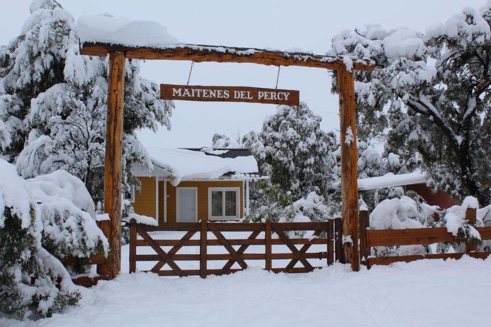
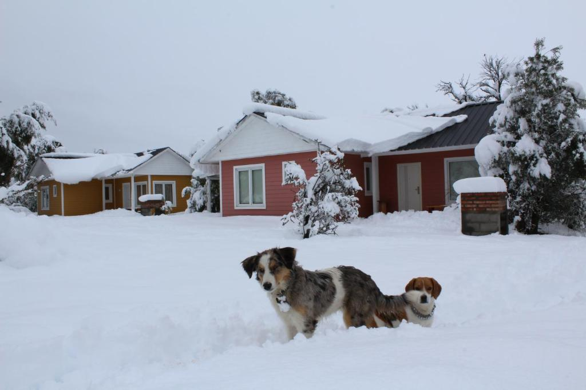
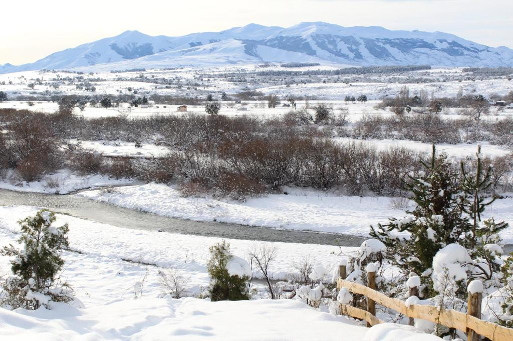
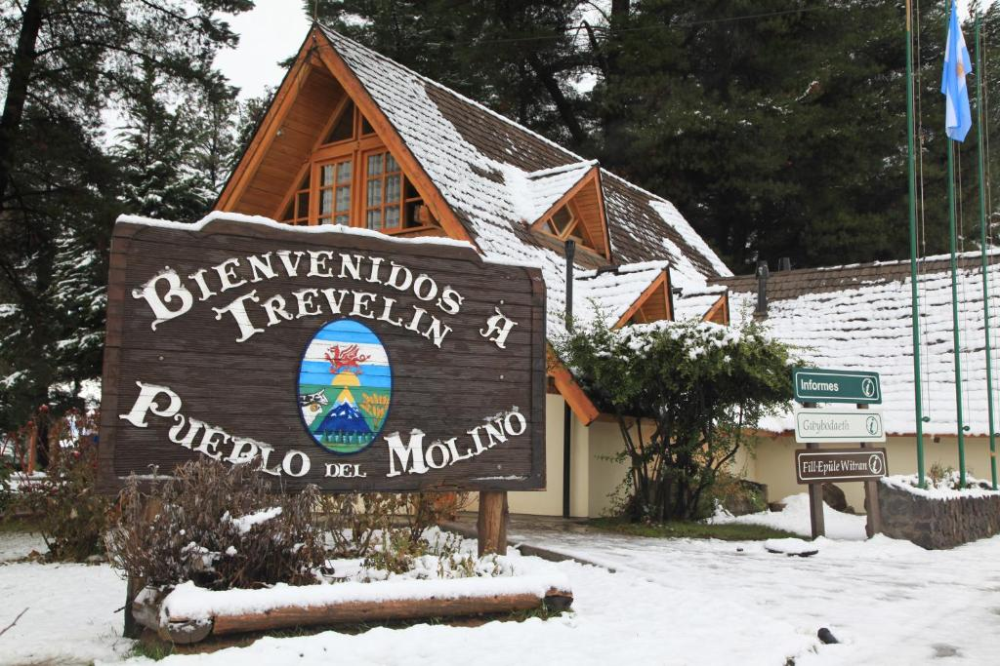

Bienvenido a la pagina web de las Cabañas Maitenes del Percy
Informacion General
El establecimiento Maitenes Del Percy está situado en Trevelín, a 28 km del complejo hidroeléctrico Futaleufú y a 1,3 km del Museo del Molino de Nant Fach y ofrece conexión WiFi gratuita, jardín y estacionamiento privado gratuito.
Los alojamientos están equipados con zona de comedor, zona de estar con TV vía satélite de pantalla plana, cocina con horno, microondas y heladera, baño privado con artículos de aseo gratuitos y ropa de cama.
El establecimiento Maitenes Del Percy incluye parrilla.
Los alrededores ofrecen un entorno magnífico para la práctica de esquí y ciclismo. El aeropuerto más cercano es el de Esquel, ubicado a 33 km.




Un poco de nosotros
Un lugar de tranquilidad, privacidad y naturaleza. Bosque nativo, costa de río, vista a la cordillera de los Andes, y al Nahuel Pan. Proximidad al Parque Nacional Los Alerces, Centro de esquí La Hoya, Campo de Tulipanes, Aeropuerto, Paso fronterizo a Chile.
Somos una familia que ama la Patagonia y hemos trabajado en nuestro predio de manera de ofrecer a nuestros huéspedes la comodidad y placer tan deseada en los momentos de ocio.
El barrio se lo conoce como las Barrancas de Trevelín. Una extensión de 1 km de 14 lotes que tienen frente a la Ruta 71 y se extienden hasta el Río Percy. La tranquilidad es la protagonista y la posibilidad de disfrutar de imponentes vistas a cada instante.
Ubicación de las Cabañas
Formulario de Reserva
Buscar Otras Opciones
Formas de contacto
Telefono: Raul Belen +541141686433 y Matilde Ambrosio +541154877358